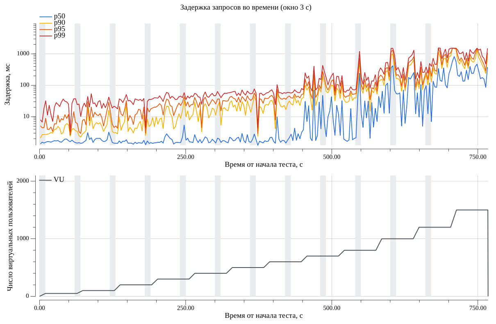
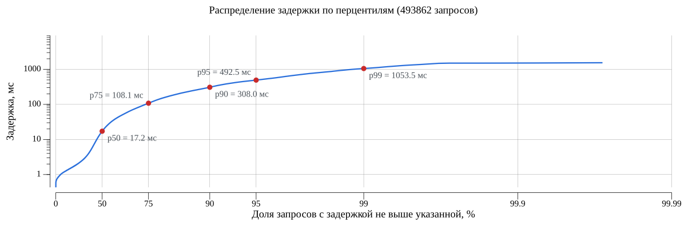
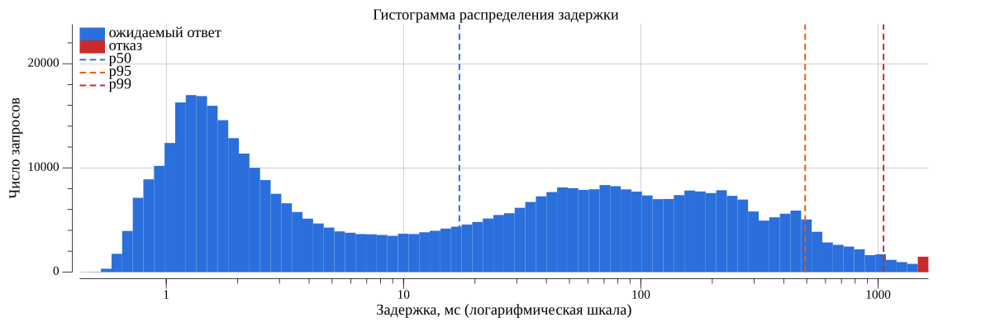
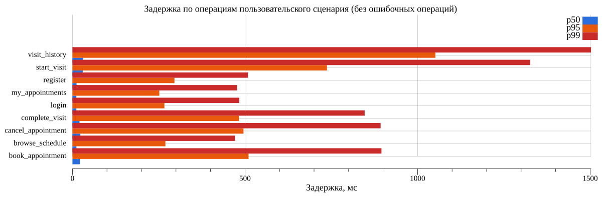
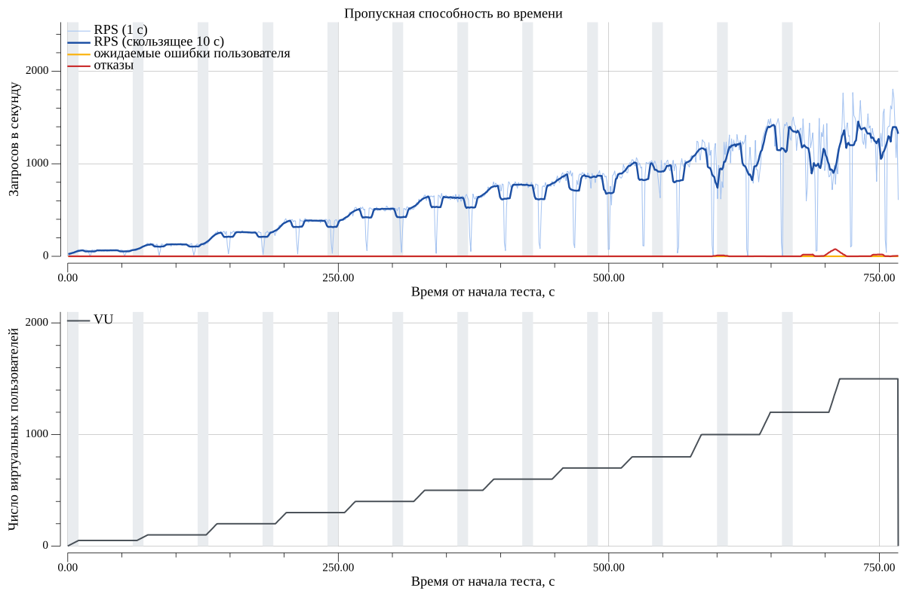
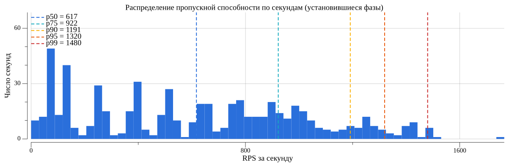
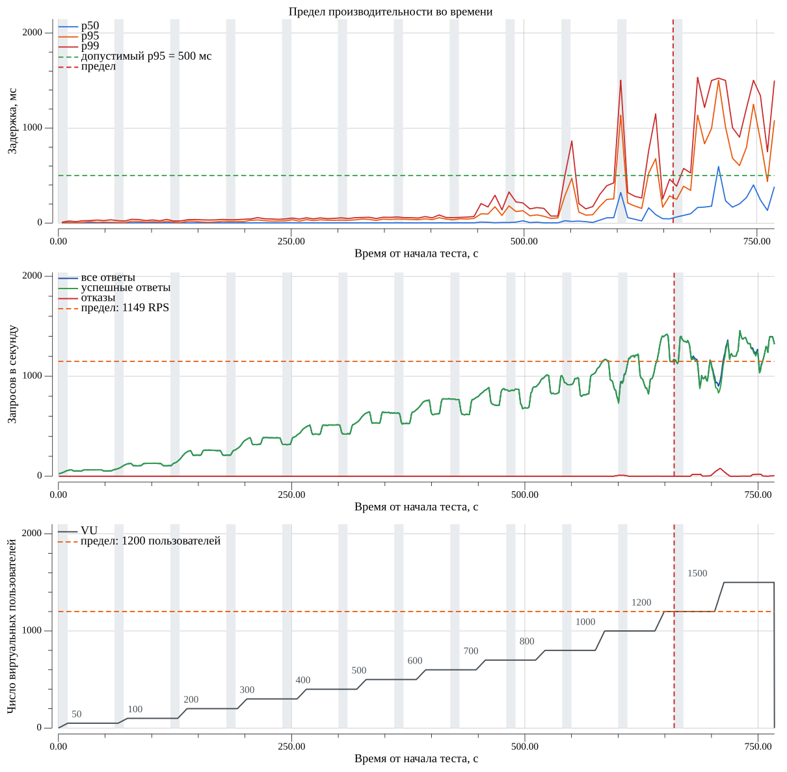
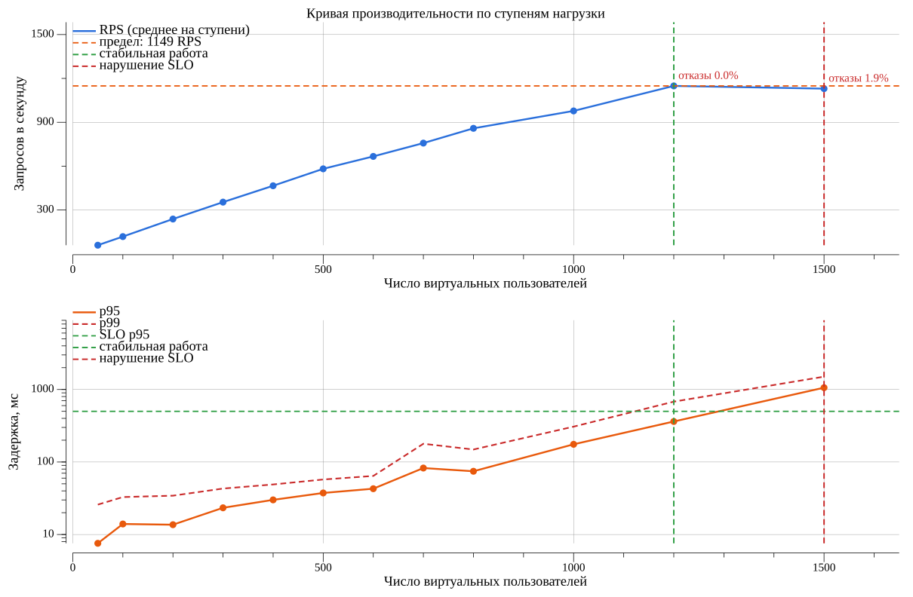
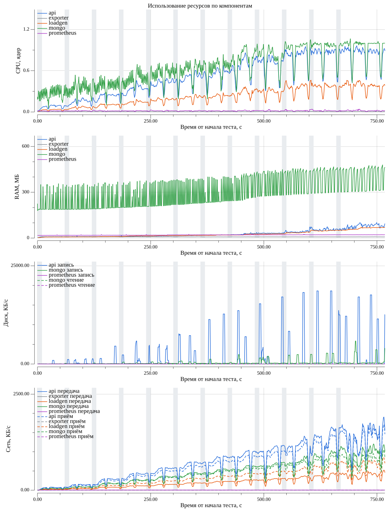

Ступенчатое увеличение нагрузки
Запросов493860
RPS среднее / медиана643 / 633
p50 / p95 задержки17.2 / 492 мс
p99 задержки1054 мс
Отказы0.30%
Ошибочные операции0.00%
Стабильная работа до 1200 VU (~1149 RPS). Нарушение SLO начинается с 1500 VU. Максимальная пропускная способность 1149 RPS при 1200 VU.
Задержка
| Задержка, мс | count | min | mean | p50 | p75 | p90 | p95 | p99 | max |
|---|---|---|---|---|---|---|---|---|---|
| Все запросы | 493860 | 0.43 | 104 | 17.2 | 108 | 308 | 492 | 1054 | 1612 |
| Корректные операции | 493860 | 0.43 | 104 | 17.2 | 108 | 308 | 492 | 1054 | 1612 |
| Ошибочные операции | 0 | — | — | — | — | — | — | — | — |



Операции пользовательского сценария
| Операция | count | min | mean | p50 | p75 | p90 | p95 | p99 | max | Отказы | Ошибочные |
|---|---|---|---|---|---|---|---|---|---|---|---|
| book_appointment | 71685 | 0.88 | 112 | 21.6 | 131 | 384 | 510 | 895 | 1323 | 0.00% | 0.00% |
| browse_schedule | 71920 | 0.57 | 59.9 | 11.6 | 72.7 | 195 | 269 | 471 | 793 | 0.00% | 0.00% |
| cancel_appointment | 21407 | 0.81 | 111 | 23.0 | 133 | 366 | 496 | 893 | 1247 | 0.00% | 0.00% |
| complete_visit | 49524 | 0.84 | 105 | 20.5 | 124 | 347 | 482 | 847 | 1293 | 0.00% | 0.00% |
| login | 72097 | 0.43 | 59.2 | 11.4 | 72.3 | 190 | 266 | 483 | 830 | 0.00% | 0.00% |
| my_appointments | 71356 | 0.55 | 56.6 | 11.4 | 69.0 | 182 | 252 | 477 | 795 | 0.00% | 0.00% |
| register | 15131 | 0.56 | 63.0 | 12.0 | 70.9 | 208 | 296 | 509 | 695 | 0.00% | 0.00% |
| start_visit | 49812 | 1.06 | 161 | 29.8 | 190 | 546 | 738 | 1326 | 1612 | 0.28% | 0.00% |
| visit_history | 70930 | 0.86 | 198 | 31.3 | 231 | 661 | 1052 | 1503 | 1612 | 1.87% | 0.00% |

Пропускная способность
| Показатель | count | min | mean | p50 | p75 | p90 | p95 | p99 | max |
|---|---|---|---|---|---|---|---|---|---|
| RPS за секунду | 768 | 0.00 | 643 | 633 | 968 | 1276 | 1410 | 1561 | 1807 |


Фазы нагрузки
| Участок | VU | RPS ср. | RPS p50 | RPS p5 | p50 мс | p95 мс | p99 мс | Отказы | CPU api | CPU mongo | RAM api, МБ | SLO |
|---|---|---|---|---|---|---|---|---|---|---|---|---|
| разгон до 50 | 50 | 37.3 | 39.5 | 9.70 | 1.46 | 5.88 | 20.6 | 0.00% | 0.03 | 0.24 | 5.42 | да |
| 50 VU | 50 | 59.2 | 63.5 | 24.9 | 1.67 | 7.56 | 25.8 | 0.00% | 0.08 | 0.27 | 8.84 | да |
| разгон до 100 | 100 | 80.1 | 77.5 | 61.9 | 1.47 | 4.82 | 25.4 | 0.00% | 0.09 | 0.29 | 8.94 | да |
| 100 VU | 100 | 118 | 128 | 55.2 | 1.80 | 14.0 | 32.8 | 0.00% | 0.15 | 0.34 | 9.49 | да |
| разгон до 200 | 200 | 132 | 131 | 121 | 1.59 | 7.91 | 22.0 | 0.00% | 0.16 | 0.38 | 9.55 | да |
| 200 VU | 200 | 238 | 255 | 113 | 1.50 | 13.6 | 34.3 | 0.00% | 0.23 | 0.38 | 10.3 | да |
| разгон до 300 | 300 | 222 | 256 | 65.0 | 1.48 | 15.9 | 33.7 | 0.00% | 0.21 | 0.36 | 11.5 | да |
| 300 VU | 300 | 354 | 380 | 217 | 1.66 | 23.3 | 43.0 | 0.00% | 0.33 | 0.48 | 11.8 | да |
| разгон до 400 | 400 | 308 | 372 | 82.1 | 2.29 | 34.1 | 53.1 | 0.00% | 0.30 | 0.44 | 12.7 | да |
| 400 VU | 400 | 466 | 500 | 330 | 1.76 | 30.0 | 49.0 | 0.00% | 0.41 | 0.56 | 13.7 | да |
| разгон до 500 | 500 | 415 | 515 | 106 | 1.68 | 31.2 | 54.6 | 0.00% | 0.43 | 0.57 | 14.7 | да |
| 500 VU | 500 | 582 | 624 | 450 | 1.81 | 37.4 | 57.4 | 0.00% | 0.47 | 0.59 | 16.2 | да |
| разгон до 600 | 600 | 632 | 640 | 589 | 1.77 | 43.3 | 62.6 | 0.00% | 0.53 | 0.65 | 17.8 | да |
| 600 VU | 600 | 666 | 731 | 178 | 1.77 | 42.8 | 64.2 | 0.00% | 0.52 | 0.62 | 19.2 | да |
| разгон до 700 | 700 | 771 | 767 | 748 | 1.79 | 39.9 | 58.1 | 0.00% | 0.59 | 0.68 | 21.0 | да |
| 700 VU | 700 | 758 | 803 | 145 | 3.85 | 82.5 | 178 | 0.00% | 0.64 | 0.75 | 25.6 | да |
| разгон до 800 | 800 | 856 | 876 | 764 | 16.4 | 184 | 318 | 0.00% | 0.77 | 0.89 | 30.9 | да |
| 800 VU | 800 | 859 | 904 | 113 | 3.45 | 74.5 | 149 | 0.00% | 0.68 | 0.77 | 31.4 | да |
| разгон до 1000 | 1000 | 917 | 974 | 683 | 27.3 | 468 | 782 | 0.00% | 0.81 | 0.90 | 37.8 | да |
| 1000 VU | 1000 | 978 | 1022 | 109 | 24.2 | 175 | 307 | 0.00% | 0.79 | 0.89 | 40.5 | да |
| разгон до 1200 | 1200 | 936 | 948 | 621 | 201 | 984 | 1501 | 1.13% | 0.84 | 0.94 | 62.7 | нет |
| 1200 VU | 1200 | 1149 | 1240 | 438 | 52.0 | 362 | 680 | 0.01% | 0.84 | 0.94 | 54.7 | да |
| разгон до 1500 | 1500 | 1242 | 1390 | 564 | 74.6 | 288 | 448 | 0.00% | 0.70 | 0.77 | 56.7 | да |
| 1500 VU | 1500 | 1130 | 1200 | 654 | 177 | 1060 | 1504 | 1.93% | 0.86 | 0.95 | 72.2 | нет |
Поиск предела производительности


Использование ресурсов
| Компонент | Метрика | min | max | mean | median | p95 |
|---|---|---|---|---|---|---|
| api | CPU, ядер | 0.01 | 0.96 | 0.51 | 0.50 | 0.91 |
| api | Троттлинг CPU, с/с | 0.00 | 0.41 | 0.03 | 0.00 | 0.15 |
| api | Чтение с диска, КБ/с | 0.00 | 0.00 | 0.00 | 0.00 | 0.00 |
| api | Запись на диск, КБ/с | 0.00 | 18626 | 1431 | 0.00 | 12488 |
| api | RAM (working set), МБ | 2.81 | 101 | 29.4 | 18.8 | 82.5 |
| api | Сеть, приём КБ/с | 0.22 | 1715 | 651 | 620 | 1462 |
| api | Сеть, передача КБ/с | 0.10 | 1905 | 726 | 708 | 1594 |
| api | Процессы и потоки | 7.00 | 17.0 | 9.74 | 10.0 | 11.0 |
| exporter | CPU, ядер | 0.00 | 0.01 | 0.00 | 0.00 | 0.01 |
| exporter | Троттлинг CPU, с/с | 0.00 | 0.00 | 0.00 | 0.00 | 0.00 |
| exporter | Чтение с диска, КБ/с | 0.00 | 0.00 | 0.00 | 0.00 | 0.00 |
| exporter | Запись на диск, КБ/с | 0.00 | 0.00 | 0.00 | 0.00 | 0.00 |
| exporter | RAM (working set), МБ | 2.90 | 8.25 | 7.77 | 7.89 | 8.17 |
| exporter | Сеть, приём КБ/с | 0.24 | 0.55 | 0.45 | 0.48 | 0.48 |
| exporter | Сеть, передача КБ/с | 1.98 | 4.05 | 3.74 | 4.02 | 4.04 |
| exporter | Процессы и потоки | 4.00 | 7.00 | 6.20 | 7.00 | 7.00 |
| loadgen | CPU, ядер | 0.00 | 0.46 | 0.22 | 0.21 | 0.41 |
| loadgen | Троттлинг CPU, с/с | 0.00 | 0.00 | 0.00 | 0.00 | 0.00 |
| loadgen | Чтение с диска, КБ/с | 0.00 | 0.00 | 0.00 | 0.00 | 0.00 |
| loadgen | Запись на диск, КБ/с | 0.00 | 0.00 | 0.00 | 0.00 | 0.00 |
| loadgen | RAM (working set), МБ | 2.45 | 71.5 | 25.8 | 17.9 | 67.6 |
| loadgen | Сеть, приём КБ/с | 1.68 | 858 | 318 | 300 | 716 |
| loadgen | Сеть, передача КБ/с | 1.48 | 523 | 195 | 187 | 432 |
| loadgen | Процессы и потоки | 7.00 | 9.00 | 8.87 | 9.00 | 9.00 |
| mongo | CPU, ядер | 0.05 | 1.06 | 0.64 | 0.62 | 1.00 |
| mongo | Троттлинг CPU, с/с | 0.00 | 1.19 | 0.42 | 0.27 | 1.12 |
| mongo | Чтение с диска, КБ/с | 0.00 | 45.0 | 0.33 | 0.00 | 0.00 |
| mongo | Запись на диск, КБ/с | 1.34 | 5840 | 332 | 167 | 1552 |
| mongo | RAM (working set), МБ | 180 | 479 | 304 | 288 | 455 |
| mongo | Сеть, приём КБ/с | 0.11 | 1054 | 410 | 409 | 872 |
| mongo | Сеть, передача КБ/с | 0.03 | 1204 | 459 | 431 | 1032 |
| mongo | Процессы и потоки | 39.0 | 153 | 98.4 | 91.0 | 150 |
| prometheus | CPU, ядер | 0.01 | 0.04 | 0.02 | 0.02 | 0.03 |
| prometheus | Троттлинг CPU, с/с | 0.00 | 0.00 | 0.00 | 0.00 | 0.00 |
| prometheus | Чтение с диска, КБ/с | 0.00 | 383 | 2.00 | 0.00 | 0.00 |
| prometheus | Запись на диск, КБ/с | 0.00 | 9.00 | 0.94 | 0.00 | 7.00 |
| prometheus | RAM (working set), МБ | 16.9 | 25.3 | 20.2 | 21.0 | 21.6 |
| prometheus | Сеть, приём КБ/с | 2.44 | 6.85 | 5.71 | 6.10 | 6.29 |
| prometheus | Сеть, передача КБ/с | 0.36 | 1.24 | 0.91 | 0.96 | 1.06 |
| prometheus | Процессы и потоки | 7.00 | 14.0 | 8.03 | 8.00 | 8.00 |

Коды ответов
| Код | Запросов |
|---|---|
| 200 | 355905 |
| 201 | 136487 |
| 500 | 1468 |
Окружение прогона
| Компонент | Логические CPU | Квота CPU | Резерв RAM, МБ | Лимит RAM, МБ | Образ | ID образа |
|---|---|---|---|---|---|---|
| api | 0,1 | 1 | 512 | 512 | vitaline-lab6-api:20261115-202919-ramp-ps2k | 579b68ac81b6 |
| exporter | 6,7 | — | 64 | 64 | vitaline-lab4-exporter:1 | 1d23c3f2327d |
| loadgen | 4,5 | — | 2048 | 2048 | vitaline-lab4-loadgen:1 | 48e1046c6d0e |
| mongo | 2,3 | 1 | 1024 | 1024 | mongo:7 | 9896df581dfd |
| prometheus | 6,7 | — | 768 | 768 | prom/prometheus:v3.5.0 | 63805ebb8d2b |